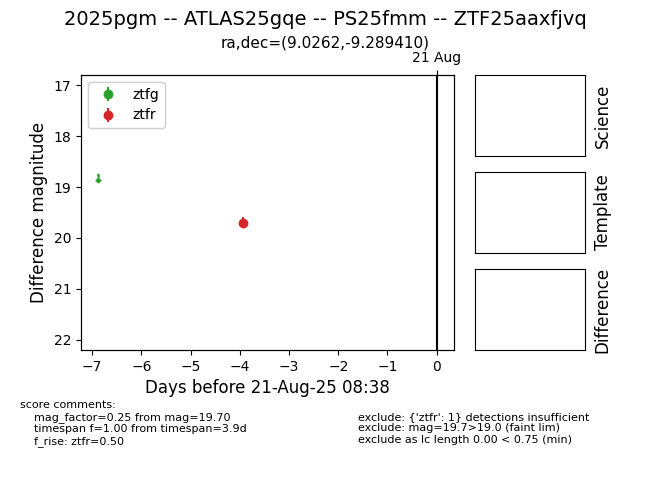

Target 2025pgm at 2025-08-21 09:56, see:
FINK: fink-portal.org/ZTF25aaxfjvq
Lasair: lasair-ztf.lsst.ac.uk/objects/ZTF25aaxfjvq
ALeRCE: alerce.online/object/ZTF25aaxfjvq
TNS: wis-tns.org/object/2025pgm
YSE: ziggy.ucolick.org/yse/transient_detail/2025pgm
alt names
ZTF25aaxfjvq (ztf,alerce)
2025pgm (tns,yse)
ATLAS25gqe (atlas)
PS25fmm (panstarrs)
coordinates:
equatorial (ra, dec) = (9.0262,-9.28941)
galactic (l, b) = (110.7388,-71.79723)
photometry
last ztfr=19.70
1 ztfr detections
